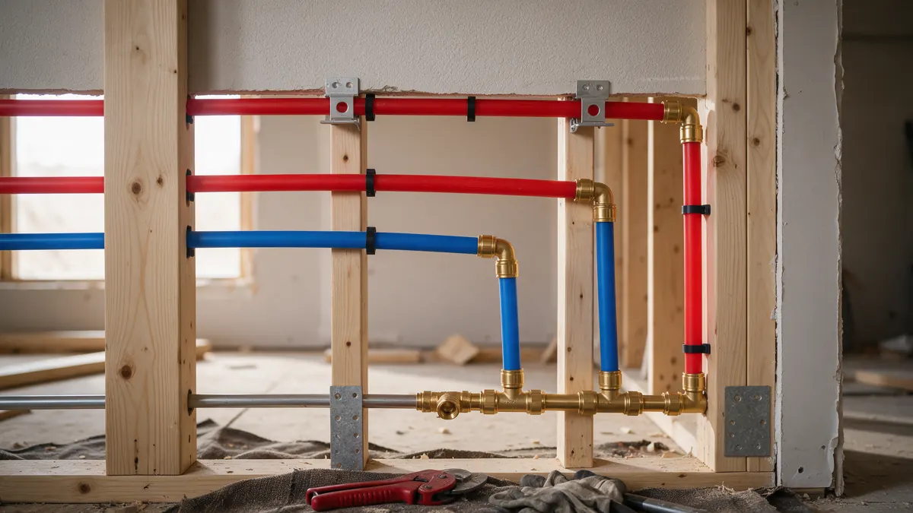

Pipe Problems: A Colorado Homeowner Handbook

Pipes fail for different reasons: freezing, corrosion, pressure or simple age. This handbook helps Colorado homeowners identify what is behind the problem, protect the house in the meantime, and understand what pushes a job from a repair to a full replacement. Plumbing Pros Colorado connects you with independent local plumbers who repair and replace pipe in your area.
Identify the type of failure
A frozen pipe often shows as no water at one tap, frost on an exterior wall line or a bulging section. A burst pipe shows as flowing water, stained ceilings or a sudden drop in pressure. Corroded pipe tends to cause pinhole drips, green crust on copper or brown stains at joints.
- No flow at one faucet
- Frost on a visible pipe
- Pinhole drips
- Discolored water
- Banging pipes
Immediate steps for frozen or burst pipes
Close the main valve if a pipe has split. For a frozen but intact pipe, open the faucet and warm the pipe gradually with a hair dryer or warm towels, working toward the blocked section. Keep torches and open flames well away from the pipe.
Water freezes at 32°F, but the split often hides until the ice melts, so keep the main off until a plumber has looked.
Reading your pipe material
Copper is reddish brown, PEX is flexible plastic in red, blue or white, and galvanized steel is gray and threaded. Polybutylene, a gray flexible plastic used in some 1980s and early 1990s housing, has a poor track record and often prompts replacement talks.
Ask the plumber to identify materials in your crawl space, basement and walls, so you understand the whole system.
If you rent or own a condominium, ask who is responsible for lines inside the walls and who must be told before work begins, since shared risers and association rules can affect scheduling.
What shifts the decision to repiping
Repeated leaks in different spots, low pressure from internal buildup, discolored water and known problem materials favor replacement. A single frozen split in an otherwise healthy line usually favors a section repair.
Access, the layout of the house and how much wall opening is needed also weigh in. Ask for the plan to repair finishes and what permits are expected.
Colorado prevention habits
Disconnect garden hoses and shut off exterior hose bibs before fall freezes. Insulate lines in garages, crawl spaces and exterior walls, and open cabinet doors on bitter nights. In mountain cabins, drain the system or keep heat on during vacancy.
Keep an eye on water pressure too, since high pressure wears fittings, and a pressure-reducing valve can help. We make the introduction; the independent plumber you speak with performs the pipe work.
Homes in mountain communities such as Evergreen, Conifer and Breckenridge face deeper cold, longer vacancies and well systems, so a plan for heat tape, insulation and winter shutoff is worth setting up before the first storm.
Water quality and pressure clues
Brown or orange water that clears after a minute can point to corroding steel, while blue-green staining on fixtures suggests copper wear. Low pressure at every tap may indicate buildup inside old galvanized pipe rather than a problem with the street supply.
A simple pressure gauge that screws onto a hose bib shows what your house is actually receiving. Readings that swing high overnight put stress on fittings, and that information helps the plumber decide on a pressure-reducing valve.
Frequently asked questions
How do I know if my pipes are polybutylene?
It is usually gray, sometimes blue or black, with markings such as PB2110 on the pipe. Check near the water heater and main entry. If you find it, ask a plumber about condition and options.
Can I wrap a burst pipe with tape as a fix?
Tape or clamps may slow a leak briefly, but they are not a lasting repair. Shut off the water and have a plumber replace the damaged section with proper fittings.
Why do my pipes bang when the water shuts off?
That is water hammer, caused by fast valve closure sending a pressure wave through the line. Loose straps, high pressure or failed arrestors may contribute. A plumber can often resolve it with simple adjustments.
Are PEX pipes safe from freezing?
PEX tolerates freezing better than rigid copper because it can expand slightly, but it can still burst or damage fittings. Insulation and heat in the space remain good protection.
When should I replace a corroded pipe section?
If you see repeated pinholes, flaking or blue-green crust, the section is wearing out. A plumber can judge whether to replace one run or look at the whole system.
Can pipe insulation prevent freezing entirely?
Insulation slows heat loss but does not create heat. In a very cold space, pipes can still freeze if the cold lasts. Combine insulation with heat in the room, sealed air leaks and a plan for cabinets on exterior walls.
Related plumbing services
Pipe Repair & Replacement by city
- Water leak repair in Dillon
- Water leak repair in Fountain
- Water leak repair in Pueblo
- Water leak repair in Castle Rock
- Water leak repair in Littleton
- Water leak repair in Morrison
Ready to talk to someone? Call (720) 794-0974 or visit get help with frozen or leaking pipes.